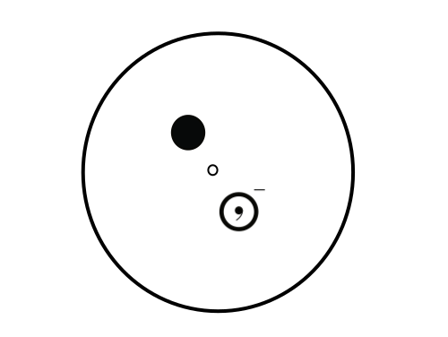

The presence of the point of inversion indicated by the blank sphere in the center of the image results in a a mirror image of the object being created on the opposite side of the central point. The mirror image is indicated by the presence of the comma within the object
